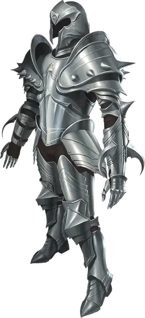

Демонический доспех
Demon Armor
Доспех (латы), очень редкий (требуется настройка)

Рекомендованная стоимость 5 001-50 000 зм
Пока вы носите этот доспех, вы получаете бонус +1 к КД, можете говорить на языке Бездны и понимаете этот язык. Кроме того, латные рукавицы с шипами этого доспеха делают ваши безоружные атаки руками магическим оружием, причиняющим рубящий урон с бонусом +1 к броскам атаки и урона и костью урона 1к8.
Проклятье. Надев этот проклятый доспех, вы не можете его снять, пока не станете целью заклинания снятие проклятья [remove curse] или подобной магии. Нося этот доспех, вы совершаете с помехой броски атаки по демонам и спасброски от заклинаний и особых умений демонов.